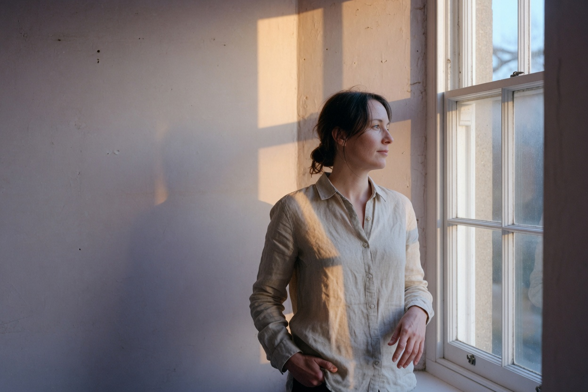

01 Window, profile
Aspiring photographer
Light, held still.
Studies in portrait, street, landscape, and still life. Eight pictures, then one morning told in four frames.
- 01 Attention
- 02 Simple light
- 03 Knowing when to stop
A portfolio of studies. The pictures are the argument: patience, plain light, and a finish that keeps the hour intact.
01 — Work
Selected studies
Each picture is here because of a decision you can point to: where to stand, what to leave large, and which edge of light to trust.
02 — Qualities
What the work depends on
Before the camera comes up. These are the habits a careful photographer is built from.
-
01
Patience
The frame stays until the moment finishes. A walk, a hand around a cup, a change in the cloud.
-
02
Restraint
One light and one subject. What is left out of the frame is part of the picture.
-
03
Empathy
People are met at the distance they offer. A portrait waits to be invited closer.
-
04
Curiosity
Stairs, cups, wet roads. Ordinary things, looked at as if they might answer.
-
05
Accuracy
Color follows the hour. Skin stays skin. A highlight is kept when it was really there.
03 — Craft
Aptitude, tested
Skill you can check against the pictures: exposure, placement, light, color, sequence, and finish.
- Exposure
- Linen by the window keeps its weave. A shop lamp at dusk stays a lamp. Shadows open enough to read the room.
- Placement
- A face sits in open wall when the wall belongs to the portrait. The horizon drops when the sky is doing the work. The figure in the grass is small on purpose.
- Light
- Windows, overcast sky, and lamps that were already on. Shape comes from one source and the shadow it draws.
- Color
- A warm shadow against a cooler day. The same grade runs through the set, so the studies belong to one eye.
- Sequence
- The morning below is four frames of one sitting. Each cut moves closer to the gesture, then steps back and lets the room end it.
- Finish
- Grain stays fine. Skin and plaster keep their texture. The crop stays close to what the frame saw.
One morning
Four frames, one room
Arriving, attending, the gesture, then the room once it is quiet. A small story is a kind of aptitude.
04 — Contact
A sitting, an assist, a walk.
Portraits at home, small commissions, and second-shooter work for someone who wants a careful extra pair of eyes.